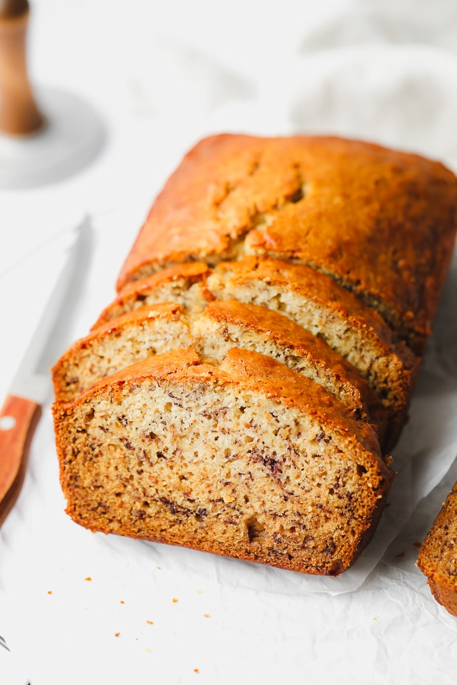

Vegan Banana Bread

Description
Don't let your old bananas go to waste! Instead, mash 'em up and throw them into this easy banana bread recipe. Every slice is moist, lightly spiced, and just so scrumptious! Enjoy a slice warm with a pat of vegan butter.
Ingredients
- 2 tablespoons ground flaxseed
- 5 tablespoons water
- 2 large ripe bananas, about 1 cup mashed
- 1/3 cup melted vegan butter
- 2/3 cup granulated sugar
- 1/4 cup almond milk
- 2 cups all purpose flour
- 1 teaspoon baking soda
- 1/2 teaspoon salt
- 1/4 teaspoon fresh ground nutmeg (optional)
- 3/4 cup chopped walnuts or non-dairy chocolate chips (optional)
Steps
- Preheat the oven to 350 degrees F and grease a standard loaf pan (8 1/2 x 4 1/2 inches or 9 x 5 inches).
- In a small bowl, combine the ground flaxseed and water. Set aside to thicken; this is your flax egg mixture.
- In a large bowl, mash the bananas with a fork until smooth. Scoop it into a measuring cup to make sure you have about 1 cup mashed, then return it to the bowl. Stir the melted vegan butter into the bananas.
- Now add the sugar, almond milk and flax egg mixture. Stir with a large spoon until well combined.
- Add the flour to the bowl with the wet ingredients, then sprinkle the baking soda, salt and nutmeg if using on top of the flour. Stir gently until just combined, making sure you don't over mix.
- Gently fold in the walnuts or chocolate chips, if using. Pour into the prepared pan, place in the center rack of the oven and bake for 50-60 minutes, or until a toothpick inserted in the center comes out clean.
- Let it cool in the pan for a few minutes, then transfer the loaf to a cooling rack. Let the banana bread cool for at least 30 minutes if possible, as this will make it easier to slice. Serve and enjoy!